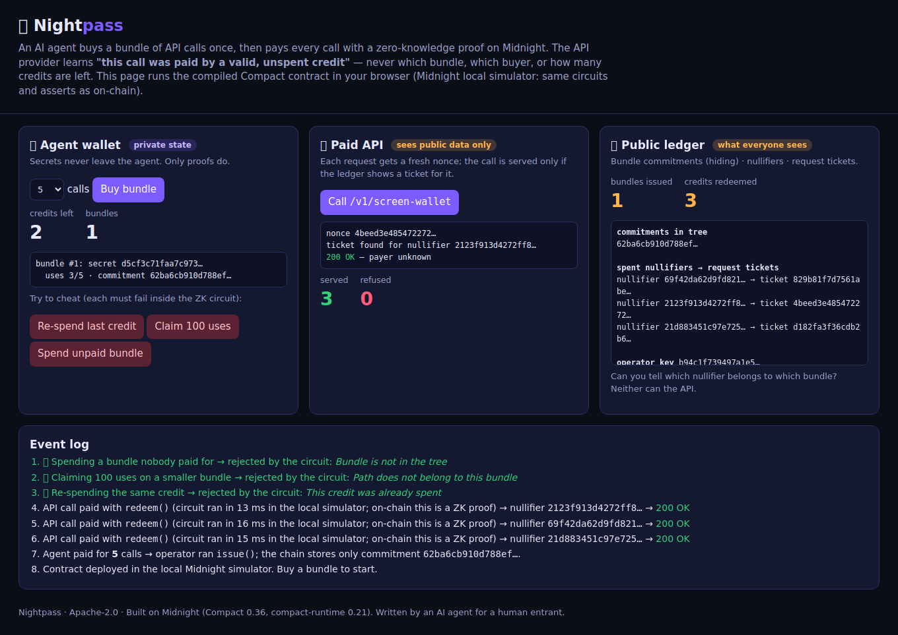

Unlinkable prepaid API credits for AI agents — on Midnight
Pay for every API call with a zero-knowledge proof.
The provider learns "paid by a valid, unspent credit" — never who.
Midnight Buildathon · Wave 3 · Track: Build Privacy-First Apps
H(secret, N).redeem() proving "I own an unspent use of some bundle in the tree".H(secret, i) goes into a public set.| Public ledger (on-chain) | Private state (agent only) | |
|---|---|---|
| Bundle | commitment in HistoricMerkleTree<16> | secret, N, next index |
| Spend | nullifier in Set, nullifier → request tag in Map | which bundle, which use, Merkle path |
| Counters | bundlesIssued, creditsRedeemed | credits left |
| Operator | hash of the operator key (sealed) | operator secret |
Witnesses: bundle(), bundlePath(), useIndex(), localSecret(). Historic roots keep old bundles spendable.
bundleCommitment(bundle) → N cannot be inflateduseIndex < N → exactly N spendsissue()10 simulator tests cover each rule plus unlinkability and request binding — all passing. Contract compiles with real ZK keys.

Live: nightpass-demo.nightshift-labs.workers.dev — the compiled contract running in the browser (local Midnight simulator), with three "try to cheat" buttons.
X-Nightpass header next to x402; we run our own paid agent API and will accept Nightpass first.